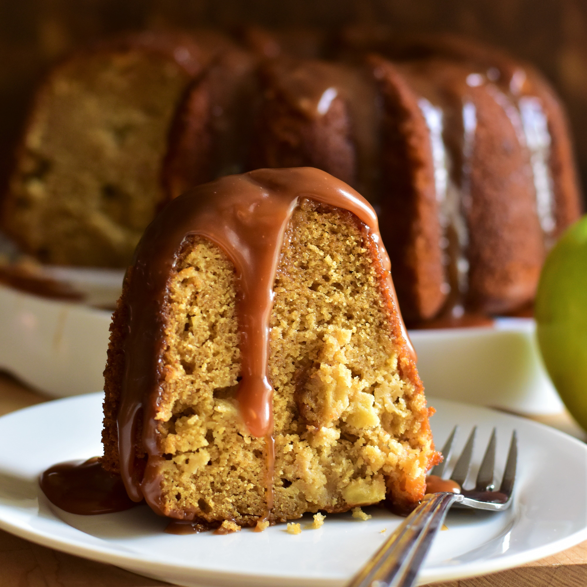

Carament Apple Bundt Cake

Description
To make this cake, first make a homemade caramel sauce which you then incorporate into the batter and use as a
topping! You'll probably have extra sauce; but no worries—it's great on ice cream. too!
Ingredients
Caramel Sauce:
- 1 cup heavy whipping cream
- 5 tablespoons unsalted butter
- 2 teaspoons vanilla extract
- ¼ teaspoon salt
- 1 ½ cups white sugar
- ¼ cup light corn syrup
- ¼ cup water
Cake:
- 3 cups all-purpose flour
- 1 teaspoon baking powder
- 1 teaspoon baking soda
- 1 teaspoon ground cinnamon
- ¾ teaspoon salt
- ½ teaspoon ground nutmeg
- 1 cup firmly packed brown sugar
- ¾ cup unsalted butter, softened
- ½ cup white sugar
- 4 large eggs, at room temperature
- ¾ cup unsweetened applesauce
- ½ cup sour cream, at room temperature
- 2 teaspoons vanilla extract
- 3 cups Granny Smith apples - peeled, cored, and diced
Steps
- Preheat the oven to 325 degrees F (165 degrees C). Grease and flour a 9-inch Bundt pan or 2 loaf pans.
- In a large bowl, stir together the sugar and oil. Beat in the eggs until light, then stir in the honey and vanilla. Combine the flour, baking powder, baking soda, salt, cinnamon and allspice; stir into the batter just until moistened. Fold in the apples and nuts. Transfer batter to prepared pan or pans (see Cook's Note).
- Bake Bundt cake until a toothpick inserted into the crown comes out clean, about one hour. (Start checking for doneness after 50 minutes.) Let cool for 10 to 15 minutes before inverting onto a plate and tapping out of the pan. If desired, dust with confectioners' sugar, sprinkle with cinnamon, or drizzle with warm honey before serving.